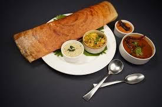

Dosa

Description
A dosa is a popular South Indian, thin, savory crepe or pancake made from a fermented batter of rice and lentils, known for its crispy texture and served hot, often with accompaniments like sambar (lentil stew) and various chutneys (like coconut or tomato).
This staple is enjoyed for breakfast, as a snack, or a light meal, with popular varieties including plain dosa, paper roast (ultra-thin), or filled versions like masala dosa, stuffed with spiced potatoes.
Ingredients
- Long-grain white rice
- Water
- Skinned Urad dal
- Chana dal
- Fenugreek Seeds
- Kosher salt
- Ghee
- Sambar for serving
Steps
-
Place 2 cups uncooked rice in a fine-mesh strainer and rinse under cool water. Transfer to a large bowl and add enough filtered water to cover by at least 2 inches. Soak uncovered at room temperature for 6 hours or overnight. Filtered water is important in case there is a high amount of chlorine in your water, which will inhibit fermentation.
-
Place 1/2 cup whole urad gota and 2 tablespoons chana dal in a fine-mesh strainer and rinse under cool water. Transfer to a medium bowl and add 1 teaspoon fenugreek seeds. Add enough filtered water to cover by at least 2 inches. Soak uncovered at room temperature for 6 hours or overnight.
-
Drain the soaked whole urad gota, chana dal, and fenugreek seeds through a fine-mesh strainer, reserving the soaking liquid.
-
Place the urad mixture in a blender (work in batches if needed). With the motor running, slowly add about 1 cup of the reserved soaking liquid and blend until you get a smooth, light, and fluffy batter. Do not let the batter overheat. To check that it has been blended well, drop a little into a bowl of water. If the batter rises to the top, it has been blended enough. Pour the batter into a large bowl.
-
Drain the soaked rice through the fine-mesh strainer, reserving the soaking liquid.
-
Place the soaked rice in the now-empty blender (no need to rinse). With the motor running, slowly add about 1 cup of the reserved soaking liquid. Once blended, add in 1/4 cup cooked rice and continue blending until you have a mostly smooth batter that feels a little grainy when you rub it between two fingers.
-
Pour the rice batter into the urad batter and add 1 1/2 teaspoons kosher salt. Stir together with your hand — the heat in your hand is good to kick-start the fermentation process, while also adding in more wild yeast. You should have a loose, thick batter that falls through your hands easily but also coats your fingers at the same time.
-
Cover the bowl with a kitchen towel and place in a warm place (80 to 90ºF). (I usually place my batter in the oven with the light on and a large bowl of hot tap water on the rack below it. I change out the water a few times to keep the temperature warm and humid in the oven.) Let ferment 8 to 14 hours.
-
When fermented, your batter will have almost doubled and look puffed on the top. It will also have a sour, fermented smell. When scooped with a spoon, it should be a frothy mass of bubbles. Note that in colder climates, the batter may not rise as much, but if it has the frothy, bubbly look and smells fermented, you can start making dosas with it.
-
Stir the batter a couple of times with a ladle. Ideally, you will have a thick, flowing batter with a consistency between crêpe and pancake batter. If too thick, add filtered water a tablespoon at a time to thin it out.
-
Before cooking the dosas, set out a little bowl with ghee or oil, a teaspoon, a spatula, a cup of water, and a few paper towels or a silicone pastry brush by the stove. I use a 1/3 measuring cup and a slightly curved large serving spoon, flat ladle, or the measuring cup to spread my dosa.
-
Heat a large cast iron skillet, griddle, or nonstick pan over medium heat. (If you are a first timer, I suggest that you start with a nonstick pan, as it will be more forgiving than the cast iron which you can work yourself up to.) Add a couple drops of ghee or oil to the pan and lightly smear it all over with a paper towel or silicone pastry brush. If you have a sprayer for oil that will work best here. At this point, you don’t want to put too much ghee or oil, as this will make it difficult to spread the batter evenly. Sprinkle a few drops of water into the pan — if it sizzles, the pan is ready. Reduce the heat to low.
-
Pour 1/3 cup of the batter into the center of the pan. The batter should sizzle a bit.
-
Starting in the middle, swirl the batter using the bottom of a slightly curved large serving spoon, flat ladle, or measuring cup in a circular motion outwards until you have spread it out into a round dosa that is about 9 inches in diameter. It is important not to press down too hard with your spreading utensil. Spreading should happen more on the top surface than on the bottom.
-
Increase the heat to medium. Wait a few seconds for the dosa to sizzle a little in the pan, and then drizzle about 1 teaspoon of ghee or oil around the edges of the dosa and on top.
-
Cook until the dosa is dried out on top and you can see some browning and crisp spots appearing on the bottom, 2 to 3 minutes. When it’s ready, the dosa will peel off easily when you slide a flat spatula underneath. If you see the dosa browning but it is still sticking, just lower the heat and wait a few seconds, then probe around the edges with your spatula until you find an area that starts to give. Usually the whole dosa will unstick once you start to pull it up from that spot.
-
Flip the dosa over and let cook for a few seconds. Flip it over again.
-
If serving as-is, fold the dosa in half in the pan, then transfer it onto a plate for serving.
-
Serve the dosas with chutney and sambar, or sprinkle with chutney pudi and serve with plain yogurt.
Home